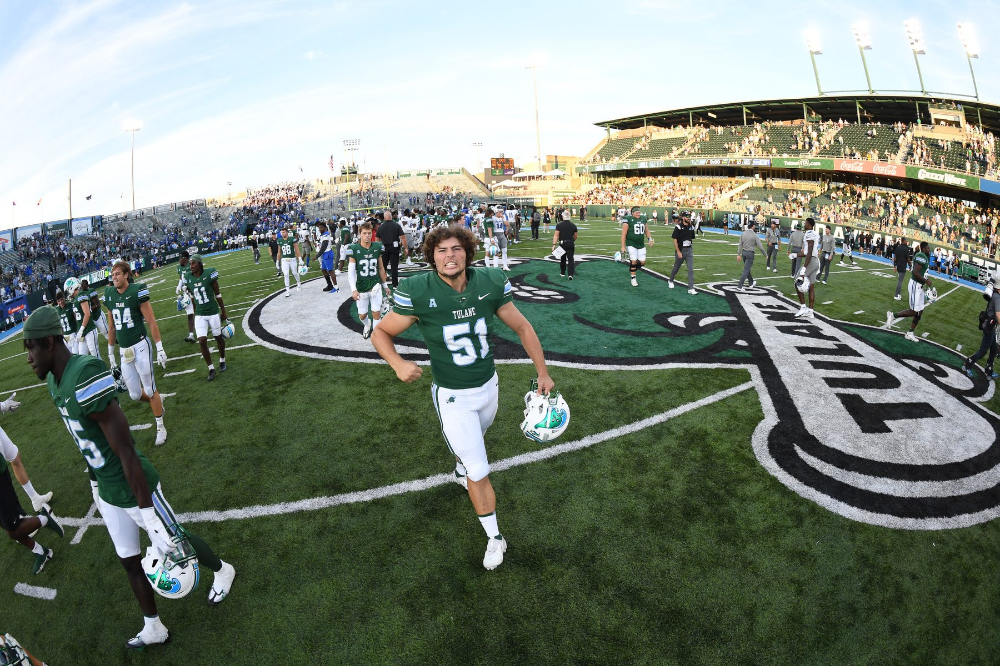

About me
I turn messy financials into actionable data, repeatably and at scale.
My goal is to learn and grow as much as I can. I think the future of finance belongs to people who can find the actionable data in the financials and also build the systems that act on it.
I already do both halves at Lightspeed Systems, where I own the forecast and the P&L and have automated the board, lender and pipeline reporting around them. I present the numbers to the executive team every month, which keeps me honest about whether the analysis actually changes a decision.
Before finance I played outside linebacker at Tulane, where we won the conference title and the Cotton Bowl. Forty hours a week of practice, film and travel on top of a finance degree taught me how to work to a schedule and show up when it is not fun. Now I'm applying that same work ethic to my career, and I'm aiming on going the distance.
What I'm building on the side
- Equity researchHow do I become a better analyst?
- Go-to-market case studyHow do I work out how to steer a business, and find the data to do it?
- Trading algorithmHow do I combine my financial experience with technical ability, at scale?
These projects are my own work, done outside my role at Lightspeed.
What I work with
- Financial modeling
- FP&A
- M&A
- Variance analysis
- Process automation
- Data visualization
- Excel
- Python
- Claude Code
- Tableau
- Sigma
- Salesforce
- Bloomberg Terminal
- Oracle NetSuite
Resume
The path so far
Austin, Texas
- Build and own the bi-weekly EBITDA forecast and month-end P&L, including a full three-statement model with unit-level cost and revenue per product and per license.
- Built revenue and EBITDA models and pro forma financial statements for 3 M&A targets, including 1 tuck-in acquisition.
- Semi-automated quarterly board reporting and monthly PE lender reporting with Python, Excel and Claude skills, cutting about 8 hours a week of manual prep. Author the MD&A commentary, with review.
- Lead the monthly budget meetings with the executive leadership team: present the P&L, drive variance analysis, and steer the discussion on what changed and what needs to change.
- Rebuilt the sales pipeline forecast as a live Sigma dashboard on Snowflake SQL for self-serve leadership visibility, saving about 5 hours a week. Led an intern through the integration build.
- Built the 2026 Sales Plan across every product, team and sales type under low, mid and high retention scenarios.
Los Angeles, California (remote)
- Researched and ran diligence across Digital Marketing, SaaS and Cybersecurity for ETC 1, the firm's $250M leveraged-buyout fund.
- Led proprietary deal sourcing through targeted email campaigns, then ran management calls and financial and operational diligence on fund candidates.
New Orleans, Louisiana
- Picked as one of five from a pool of 3,000 business students for the inaugural Tulane Ventures class.
- Secured a $250K investment for biotech startup BioPhoundry, Inc., after speaking with industry professionals and the company's C-suite for an in-depth industry, market and product analysis.
- Drafted and presented investment memos on healthcare and AI startups, from $50K to $250K, to the Tulane investment committee.
- Analyzed, adjusted and delivered margin calls to counterparties worth up to $5 million daily.
- Calculated nominal amounts for options hedging totaling up to about $200 million a week. After hedging, served as a contact for counterparties in the call auction.
- Researched and investigated companies and utilities to conduct general due diligence and recommended next steps.
- Assisted in underwriting multiple retail and industrial real estate loans: ran due diligence on tenants and calculated an investment range from the cap rate, LTV rate and vacancy rate, among other inputs.
New Orleans, Louisiana
- Part of the greatest turnaround in college football history, winning both the American Athletic Conference Championship and the Cotton Bowl.
- Scout Team Captain. Spent about 40 hours a week on conditioning, meetings and travel.
- American Athletic Conference All-Academic Team, 2022 to 2024.
New Orleans, Louisiana
- Math focus: Linear Algebra, Discrete Mathematics, Calculus II, Statistics for Scientists.
- Relevant courses: Burkenroad Reports, Distressed Debt, Venture Capital & Angel Financing, Intermediate Accounting.
- Study abroad in Australia, 2024: classes on the financial operations of sports facilities across the country.
Certification
Passed CFA Level 1. CFA Level 2 candidate, exam November 2026.
Skills
Financial modeling, FP&A, M&A, variance analysis, process automation, data visualization, cross-functional leadership.
Tools
Excel (advanced), Python (intermediate), Claude Code, Tableau, Sigma, Salesforce, Bloomberg Terminal, Oracle NetSuite.
Projects
Three questions, three projects
Equity research
How do I become a better analyst?
Three reports across a large-cap buy rating, a leveraged-buyout analysis, and a small-cap turnaround.
-
Alphabet Inc. (GOOGL), April 2025
Search growth, AI leadership, and a rising Cloud segment support the rating. 9 pages.
Buy$186 target, 13.8% upside
-
CrowdStrike (CRWD) LBO analysis, December 2024
A buyout case for a high-growth cybersecurity leader after the July 2024 outage. 10 pages.
$449.69implied per share, 23% above market
-
Newpark Resources (NR), November 2024
A Burkenroad Report on the exit from fluids and the refocus on Industrial Solutions. 32 pages.
Outperform$10 target
Go-to-market case study
How do I work out how to steer a business, and find the data to do it?
A full go-to-market pipeline, built end to end for the GTM head of an AI cybersecurity startup.
Learn
Start from existing customers and segments to see who buys and why.
Define
Set the ideal customer profile for each segment and name the category to own.
Prove
Map the beliefs a buying committee needs before signing, and the proof for each, including SOC 2.
Compound
Trace every activity back to pipeline so each campaign teaches the next one.
Independent work from September 2026. The deck and the outbound GTM repo contain customer details, so I share them on request.
Trading algorithm
How do I combine my financial experience with technical ability, at scale?
An automated paper-trading system that runs on a schedule, manages its own risk, and publishes its results every day. The chosen strategy cleared a 95% confidence interval over a 10-year timeline.
- Equity
- $9,956.57
- Total return
- −0.43%
- Drawdown
- 4.43%
- Sharpe ratio
- −0.43
Paper trading since September 11, 2026. Not investment advice.
The live strategy is a two-moving-average crossover on AAPL at 2x leverage. Five research strategies, including Donchian breakout and Bollinger mean reversion, are tested with Monte Carlo permutation tests before they get near the live book.
- Risk controls: a max-drawdown kill switch, a daily loss limit, and an hourly intraday circuit breaker. The loss limit has already fired once, which is what it is there for.
- GitHub Actions runs the daily rebalance, intraday checks, and end-of-day summary.
- The dashboard compares the strategy with AAPL buy-and-hold, and I publish the numbers whether or not it is ahead.
Built with Python, pandas, the Alpaca API, yfinance, GitHub Actions, and GitHub Pages.
Contact
Let's talk
I'm open to conversations about general finance, automation, investments, and analytics roles.